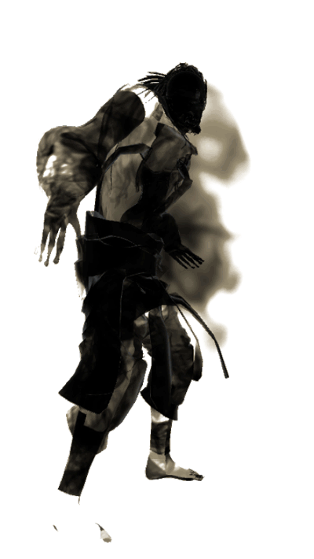
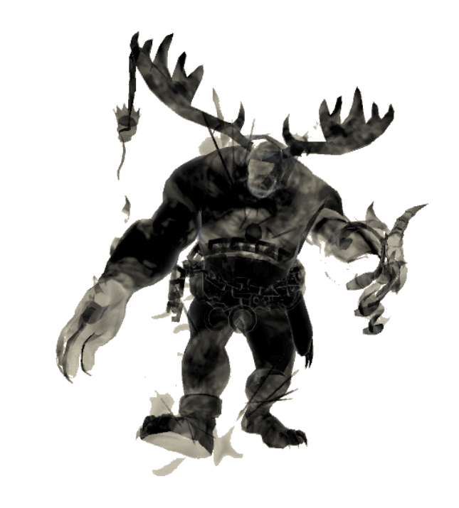
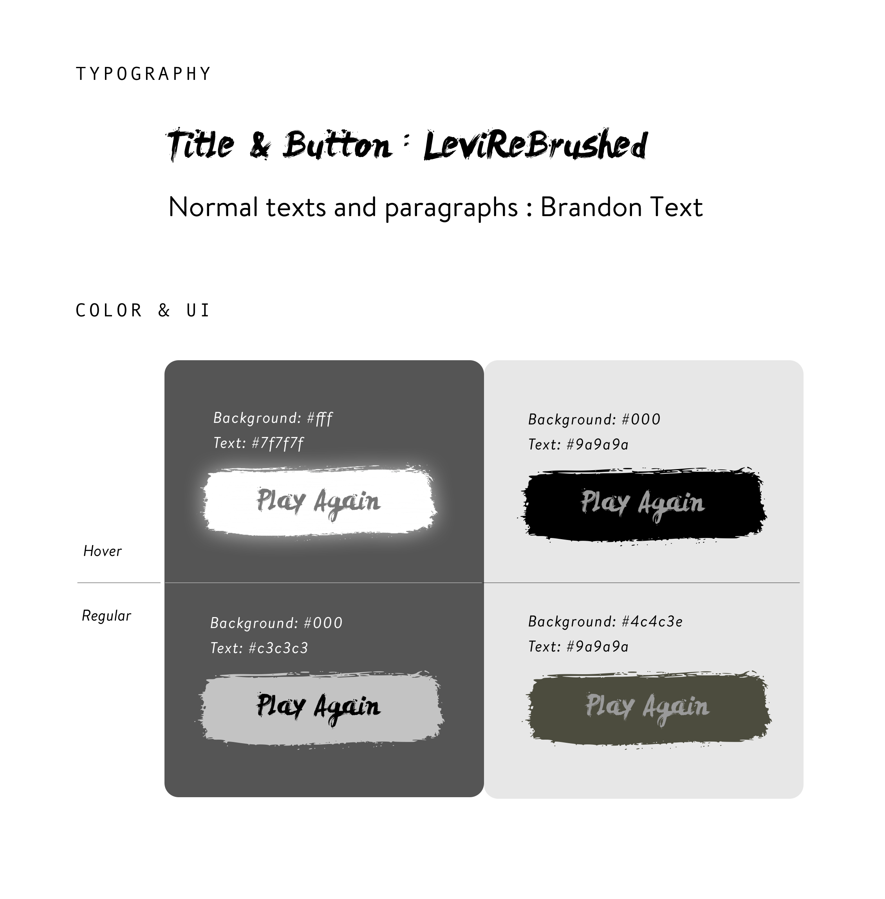
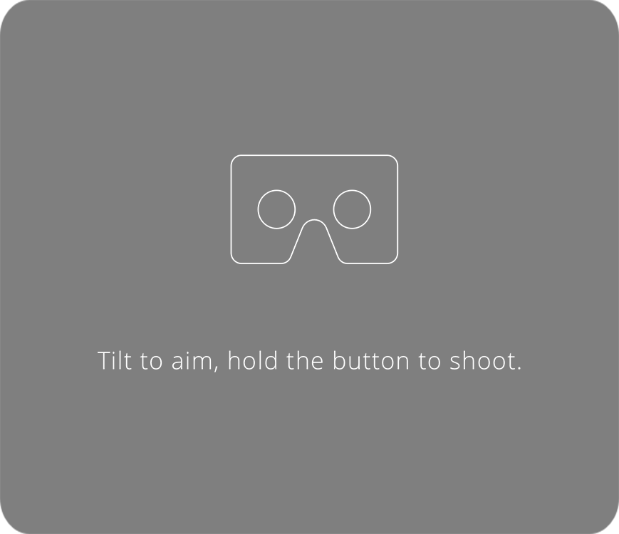

Background Story
“Hou Yi and the Ten Suns” is a Chinese folktale that goes back to at least 2000 BCE. In the folktale, there were ten sun gods. They took turns to bring light to the world every day. One day, they got bored, and decided to come out altogether. With ten suns in the sky, powerful rays scorched the earth and turned the world into a wasteland. To prevent the destruction of the Earth, Hou Yi, a Divine Archer, was sent by the god to alleviate the heat and bring life back to the world by shooting down 9 of the 10 Suns, leaving the last one alive.
Characters
Houyi is the God of Archery in Chinese Mythology. He has unsurpassable strength and accuracy.With his bow and arrow he saved the moon during an eclipse and rescued the country from a variety of plagues, one of which involved a wind monster who was wreaking havoc across the land. Hou Yi is also said to have shot down 9 of 10 suns that were burning up the earth in prehistoric times.
About us
We are a group of students from different majors in Carnegie Mellon University. With an aspiration to explore storytelling through WebVR, we gathered together and came up with the project. We share a love for Chinese folktales, therefore, we chose the classic Chinese mythology “Hou Yi and Ten Suns” as our subject matter.
Chen Ni
School of Design
Cherie Chen
HCII
Mengxin Yu
HCII
Shanshan Jin
Heinz College
Shengzhi Wu
School of Design
Yejin Lee
HCII
Process
We designed two storyboards as the guidance before we developed the whole mystery world in Unity. One is a “physical storyboard”. It is made by foam board and can help us to design the landscape and decide the position of the camera. The other one was drawn in Clip Studio Paint and can help us with the scenes and storyline.
Process
We integrated Chinese ancient traditional accessories with a Chinese ink painting style in the design of our main character Houyi. The body shape of Houyi is intentionally exaggerated, matching with the backstory of Houyi’s role as an ancient epic hero. We utilized Adobe Fuse to generate a customized character, and then bring it to Mixamo to animate it. The dynamic material of the characters is accomplished in Unity with a special ink Shader, thus the whole visual style gives a sense of misty, ancient, and mystery.


Process
In order to present the story in a classic Chinese style and create an atmosphere of myth, we decided to design everything in a Chinese ink painting style. From the UI and scenarios in the VR, to the UX in the website, we adjusted each single element to match with this overarching style.
Process
We made sure the interactions shown in the project are as coherent and seamless as possible, across both platforms - on the web page, and on the VR device. Here you could see the library of different sources we referred to as interaction patterns.
